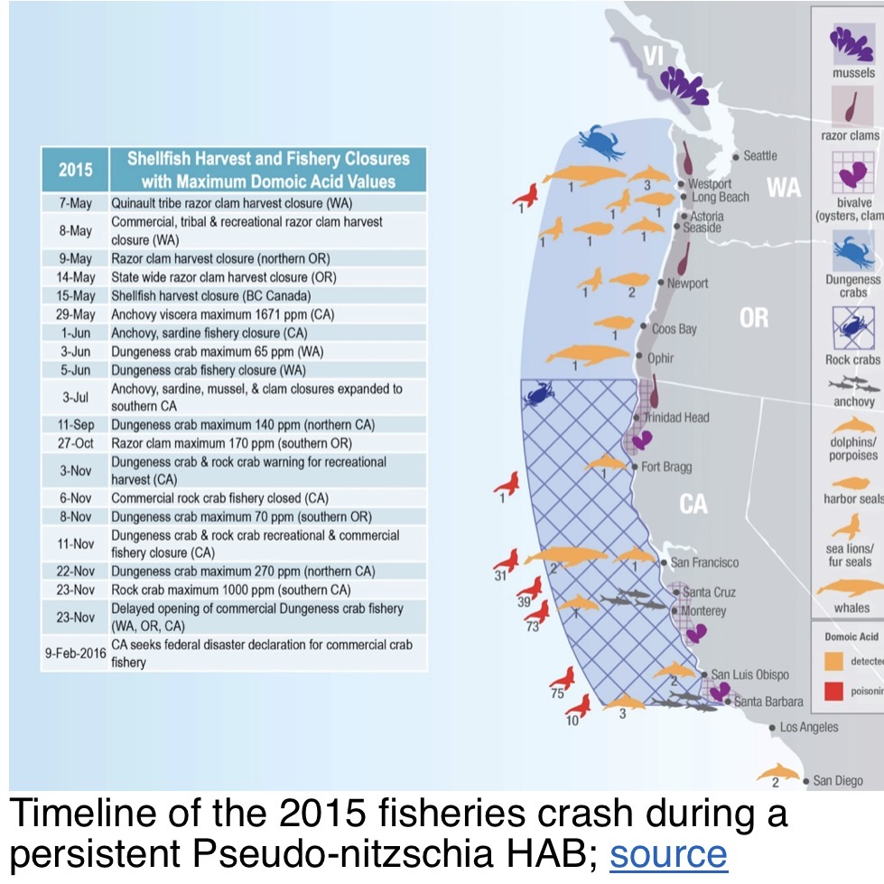
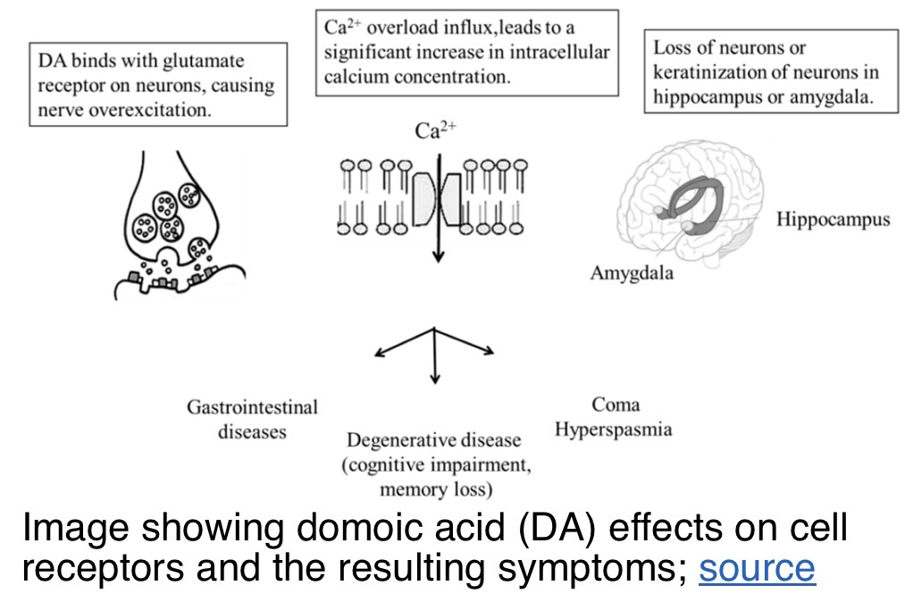

Quick guide
Pseudo-nitzschia is a genus of marine diatoms. Some species can produce domoic acid, a neurotoxin that can travel through marine food webs. The presence of the genus alone does not mean a harmful bloom is occurring.
Identification and life cycle
These microscopic photosynthetic diatoms have silica cell walls. They reproduce by cell division and can undergo sexual reproduction.
Harmful algal blooms and the 2015 event
Some species, including P. australis and P. multiseries, can produce domoic acid. Bloom risk depends on species, abundance, environmental conditions and toxin production.

Domoic acid in food webs
Domoic acid can move from diatoms into shellfish and small fish, then to seabirds and marine mammals. Exposure may cause neurological problems. It is heat-stable and is associated with amnesic shellfish poisoning in humans.
